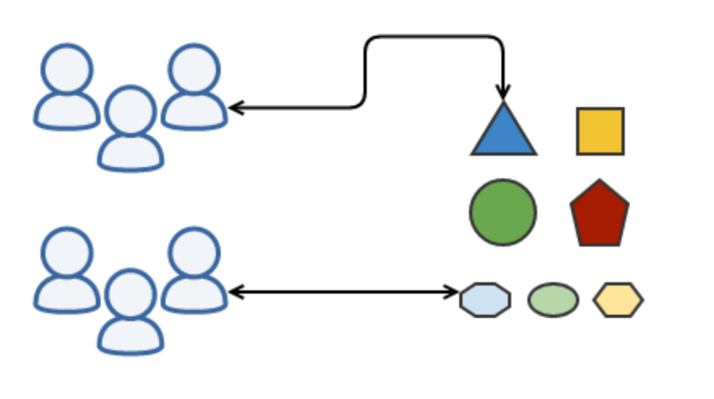
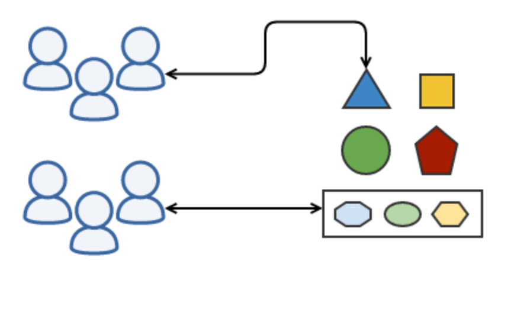
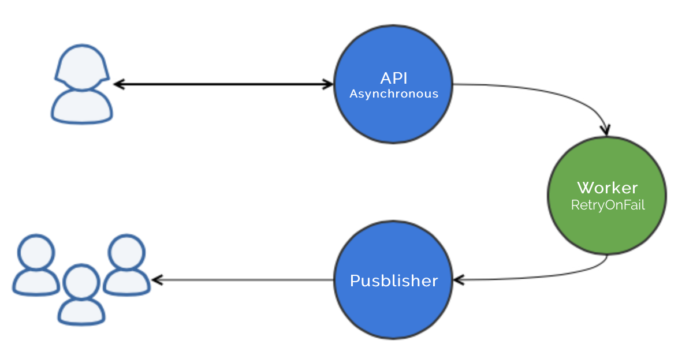
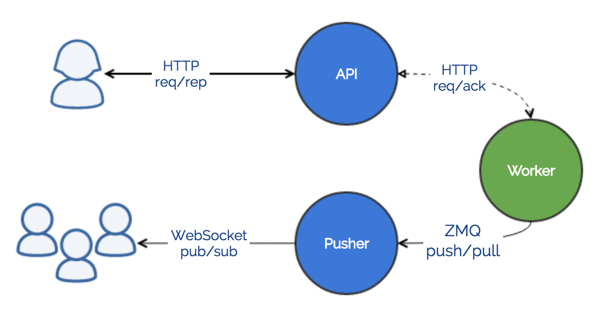

Microservices
beyond the trench
Feedback from 1 year of life
with 400 microservices
and growing...
Hello PHP tour
-
Etienne Roudeix
Lead developper -
Vincent Vermersch
CTO
Monolith
Where we come from

Microservices
The goal

Microservices
The real life

Goals
Defined 1 year ago
- Scalable
- Resilient
- Agile
- Smooth transition
CommandBus
Normalise execution everywhere
- Separation of concerns
- Abstracted runtime env
- Domain oriented
Command
Validate and transport
/**
* @param float $amount
* @param string $user_id
* @param string $auction_id
*/
class AuctionRaiseCommand extends Command
{
public static $handlers = [
AddUserToAuction::class,
CheckBidAmount::class,
NotifyParticipants::class
];
public function __construct(array $attributes = [])
{
// Validate given data
parent::__construct($attributes);
}
}
Handler
Execute and modify
class AddUserToAuction {
protected $auction;
public function __construct(AuctionRepository $auction)
{
$this->auction = $auction;
}
public function handle(AuctionRaiseCommand $command)
{
}
}
Bus
How to use it
$bus = new SimpleBus();
$bus->handle(new AuctionRaiseCommand([
'user_id'=> '',
'auction_id'=>'',
'amount' => ''
]));
Capacities
Command set the rules
class AuctionCommand implements RetryOnFail, IsHandledAsynchronously
{
public function getMaxRetry();
public function getWorker();
public function getRetryDelay($tried);
}
Middleware
React to the rules
$bus = new SimpleBus();
$bus->appendMiddleware(new AsynchronousMiddleware());
$bus->appendMiddleware(new RetryOnFailMiddleware());
Auction process
Different pods are involved

Communications
Each case needs its protocol

Delegate
HTTP PUT with acknowledgement
class Worker extends Console
{
protected $signature = 'worker {--bind=tcp://0.0.0.0:25001}';
public function handle(Httpd $httpd)
{
$httpd->route('PUT', '/', function($request, $response) {
$response->send("OK")
->subscribeCallback(null, null, function() use($request) {
SyncBus::handle($request->getCommand());
});
});
$httpd->listen($this->option('bind'));
}
}
Push
on worker
$push = $zmq->push("tcp://publisher.svc.domraider.com:23499");
$push->send(new AuctionRaisedEvent());
Pull
on publisher
$pull = $zmq->pull("tcp://0.0.0.0:23499");
$pull->subscribeCallback(function(AuctionRaisedEvent $event) {
foreach($this->webSocket->sessions as $session) {
$session->send($event);
}
});
 https://www.youtube.com/watch?v=9C6YeyyUUmI
https://www.youtube.com/watch?v=9C6YeyyUUmI
Orchestration
Cross-node supervision and scheduling
Routing
Plug & play cluster communication
- 1 pod = 1 container = 1 IP address
- 1 service load balance X pods
- 1 service = 1 dns entry (ttl <1s)
Scale
Enlarge your service in 1 click
kubectl scale --replicas=5 rc AuctionWorker
Deploy
and rollback if you need
kubectl rolling-update --image=domraider/worker:1.3.7 AuctionWorker
Le mariage sert à régler à deux
des problèmes que l'on aurait jamais eu
si on était resté tout seul.
Sacha Guitry
Centralise
Logs and bugs
One code base
5 images with their own versioning
composer install
cp docker/worker/Dockerfile .
cp docker/worker/.dockerignore .
docker build -t worker:$version .
docker tag latest worker:$version
docker push worker:$version
docker push worker:latest